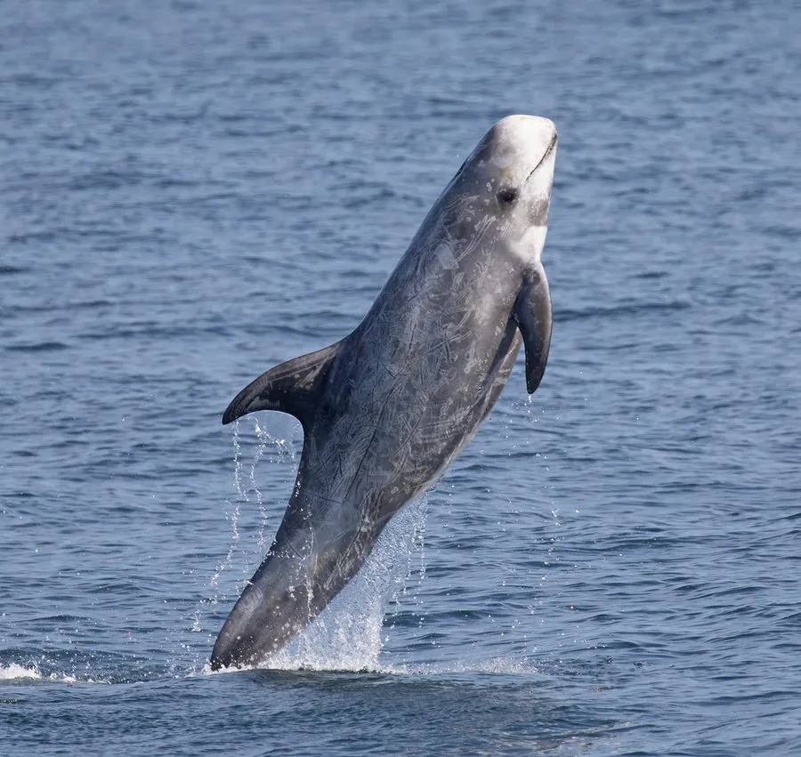

哺乳动物 · 动物界
灰海豚 Grampus griseus

广泛分布于全球温带和热带海域的中型海豚，全身布满白色抓痕状疤痕，头部钝圆、额隆突出，主要以乌贼为食。
- 分类
- 门脊索动物门纲哺乳纲目鲸目科海豚科属灰海豚属
- 栖息环境
- 温带和热带海域的深水区与大陆坡
- 地理分布
- 大西洋、太平洋和印度洋的温带与热带海域，中国东海、南海有分布
- 保护级别
- IUCN 无危（LC）；中国国家二级保护动物
物种志
灰海豚体长 3–4 米，体重 300–500 kg，雄性略大。它没有突出的喙，头部钝圆，额隆前方有一道浅沟；幼体呈深灰至褐色，成年后体色变浅，全身布满同种个体互相抓咬留下的白色疤痕，老年个体几乎通体银白。
灰海豚分布于全球温带和热带海域，包括大西洋、太平洋和印度洋，在中国东海和南海也有记录。它多在深水区活动，常结成数十只的群体，以乌贼、章鱼和小型鱼类为食，能潜入 300–600 米深水捕食。灰海豚性情较温和，常与其它海豚混群。雌性妊娠期约 13–14 个月，每胎 1 仔，寿命可达 30 年以上。目前灰海豚被列为无危，主要威胁是渔网误捕和海洋污染。
形态与习性
- 食性乌贼、章鱼与小型鱼类
- 体长3–4 m
- 体重300–500 kg
- 寿命30 年以上
- 繁殖妊娠约 13–14 个月，每胎 1 仔
- 特征无喙、头部钝圆，全身有白色疤痕
趣味知识
- 灰海豚全身的白色疤痕来自同种个体之间的抓咬。
- 它几乎没有突出的喙，头部钝圆，额隆前方有一道浅沟。
- 灰海豚偏爱乌贼，能潜入数百米深的水中捕食。